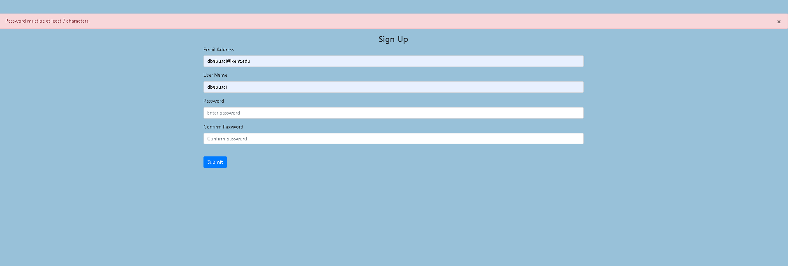

 The user should know where they are at and what is going on at all times. For every action there should be appropriate, human-readable feedback within a reasonable amount of time. A good example of applying this would be to indicate to the user where they are at in the process when working through a multi-page questionnaire. A bad example we often see is when an error message shows an error-code instead of a human-readable and meaningful message.
{% endblock%}